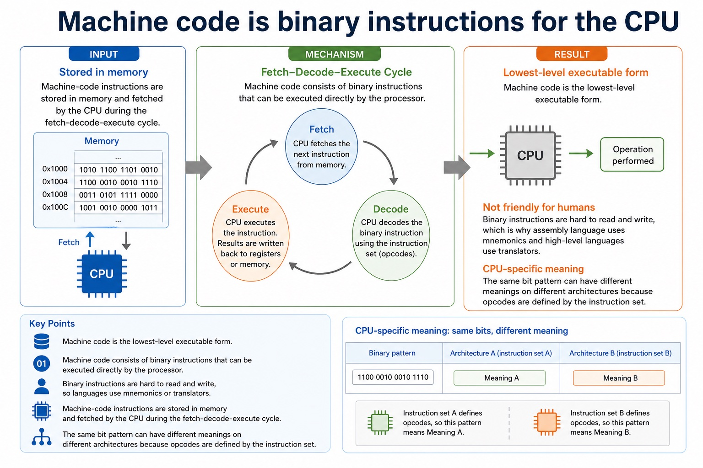
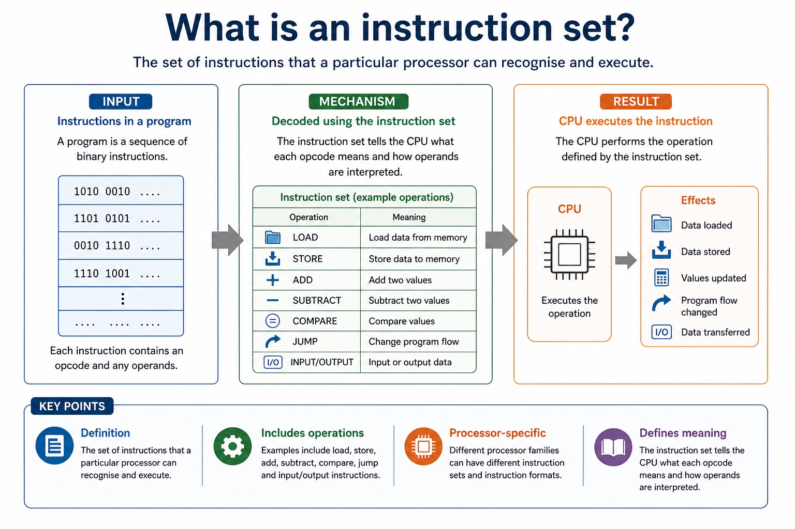
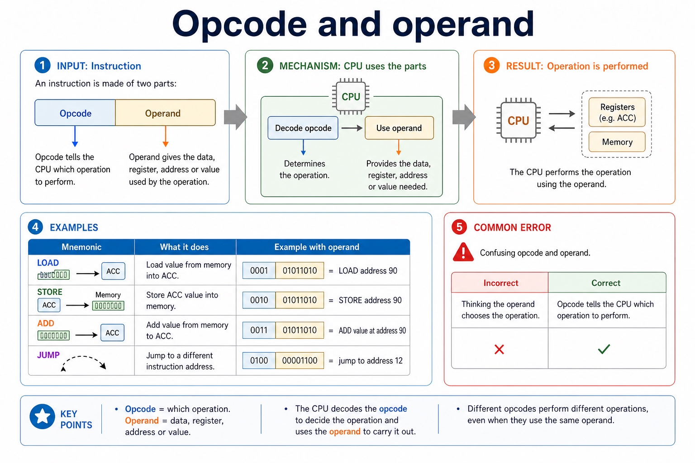
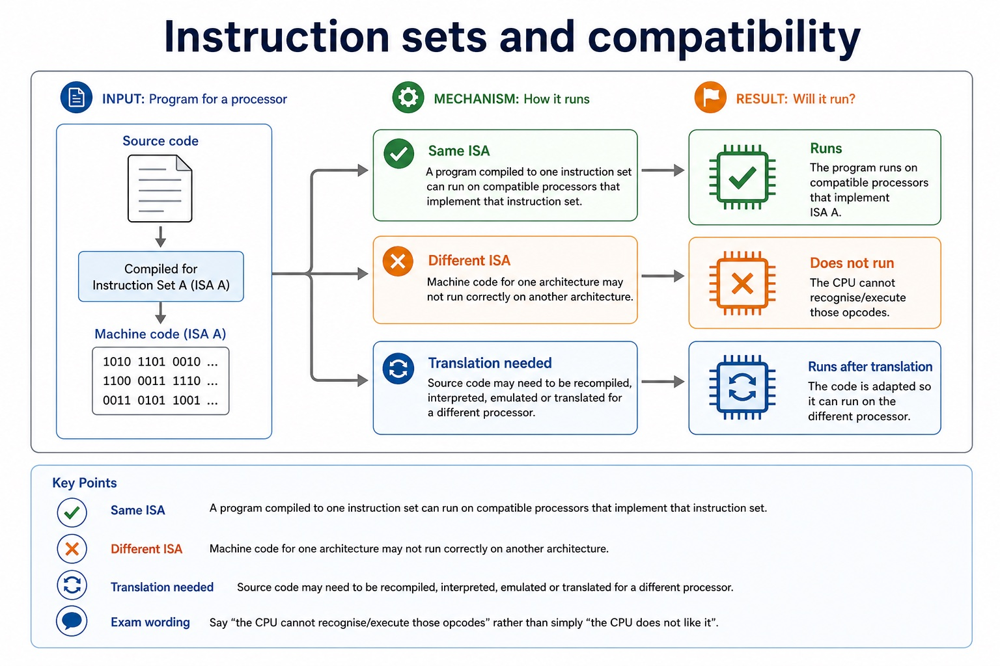

Machine code is the binary instruction form executed directly by a processor. Each bit pattern is interpreted according to that processor's instruction set, so machine code is processor dependent.
Assembly language is a low-level, processor-specific symbolic representation of machine-code instructions. Mnemonics such as ADD make operations easier for a human to read and write, while operands name the value, register or address used. An assembler translates assembly source into the corresponding machine code; assembly is not executed directly as text.
The relationship is close but not based on English spelling: a mnemonic maps to an opcode defined by the target instruction set, and an operand must be encoded in the form required by that instruction. Labels are resolved to addresses during assembly.
Worked example: Translate one symbolic instruction
For a target instruction set, ADD #3 is assembly source: ADD is the mnemonic and #3 is an immediate operand. The assembler selects that processor's binary ADD opcode and encodes the operand. A different processor type may use a different opcode or instruction format, so the same machine-code bit pattern is not portable by assumption.
Machine code is binary instructions for the CPU

Machine code is binary instructions for the CPU: source-grounded visual explanation.
Lesson fact: Lowest-level executable form
Lesson fact: Machine code consists of binary instructions that can be executed directly by the processor.
Lesson fact: Not friendly for humans
Lesson fact: Binary instructions are difficult for people to read and write accurately, but they are the form the processor executes directly.
Lesson fact: Stored in memory
Lesson fact: Machine-code instructions are stored in memory and fetched by the CPU during the fetch-decode-execute cycle.
Lesson fact: CPU-specific meaning
Lesson fact: The same bit pattern can have different meanings on different architectures because opcodes are defined by the instruction set.
Core syllabus practice
Assembly language and machine code: apply and assess
Targeted practice
1. Which language form does the processor execute directly?
Show answer
Machine code: binary instructions defined by its instruction set.
2. Why is assembly language easier for people to use than machine code?
Show answer
It uses symbolic mnemonics, operands and labels instead of raw binary bit patterns.
3. What translates assembly language into machine code?
Show answer
An assembler.
4. Why are both forms processor specific?
Show answer
Their operations, opcodes and instruction formats are defined by the target processor's instruction set.
Exam-style question
6 marks
Explain the relationship between assembly language and machine code and why an assembler and a target instruction set are required.
Show MS
Answer
Guidance
Marks
machine code consists of binary instructions executed directly by the processor
Do not accept that assembly source is executed directly or that one machine-code instruction has a universal meaning across processors.
1
assembly uses mnemonics/operands/labels as a symbolic low-level form
1
assembler translates assembly source to machine code
1
mnemonic maps to an opcode and operands are encoded
1
instruction meanings/formats are defined by the processor instruction set
1
therefore code for one processor may not execute correctly on another
A processor executes instructions defined by its instruction set.
An instruction set is the collection of machine-code instructions a
processor can recognise and execute. Machine code is binary, and each
instruction normally contains an opcode that says what to do and an
operand that says what to do it to.
Defineinstruction set and machine code accurately
Decodesimple opcode and operand instruction formats
Explainwhy instruction sets affect compatibility
001101011010
opcode: ADDoperand: address 90
Binary is not the mystery. The agreed meaning is the instruction set.
Why this matters
Questions often separate definition marks from "why can this CPU run/not run this code?" explanation marks.
Common error
An opcode is not the data itself. It specifies the operation; the operand supplies the associated value, address or register.
Warm-up hook
Two CPUs see the same bits. Why might they do different things?
Click the best reason. Bits are innocent; the instruction set gives them meaning.
Click one. The key idea is that instruction meaning is processor-specific.
Knowledge point 1
What is an instruction set?
DefinitionThe set of instructions that a particular processor can recognise and execute.Includes operationsExamples include load, store, add, subtract, compare, jump and input/output instructions.Processor-specificDifferent processor families can have different instruction sets and instruction formats.Defines meaningThe instruction set tells the CPU what each opcode means and how operands are interpreted.
Chinese support: instruction set = 指令集；machine code = 机器码；opcode = 操作码；operand = 操作数。
What is an instruction set?

What is an instruction set?: source-grounded visual explanation.
Lesson fact: Definition
Lesson fact: The set of instructions that a particular processor can recognise and execute.
Lesson fact: Includes operations
Lesson fact: Examples include load, store, add, subtract, compare, jump and input/output instructions.
Lesson fact: Processor-specific
Lesson fact: Different processor families can have different instruction sets and instruction formats.
Lesson fact: Defines meaning
Lesson fact: The instruction set tells the CPU what each opcode means and how operands are interpreted.
Knowledge point 2
Machine code is binary instructions for the CPU
Lowest-level executable form
Machine code consists of binary instructions that can be executed directly by the processor.
Not friendly for humans
Binary instructions are difficult for people to read and write accurately, but they are the form the processor executes directly.
Stored in memory
Machine-code instructions are stored in memory and fetched by the CPU during the fetch-decode-execute cycle.
CPU-specific meaning
The same bit pattern can have different meanings on different architectures because opcodes are defined by the instruction set.
Knowledge point 3
Opcode and operand
opcodeoperand
Opcode tells the CPU which operation to perform. Operand gives the data, register, address or value used by the operation.
Opcode
Operation
Meaning
Example with operand
0001
LOAD
Load value from memory into ACC.
0001 01011010 = LOAD address 90
0010
STORE
Store ACC value into memory.
0010 01011010 = STORE address 90
0011
ADD
Add value from memory to ACC.
0011 01011010 = ADD value at address 90
0100
JMP
Jump to a different instruction address.
0100 00001100 = jump to address 12
Common error
The operand is not always data itself. It may be an address, a register identifier or an immediate value depending on the instruction format.
Opcode and operand

Opcode and operand: source-grounded visual explanation.
Lesson fact: Opcode tells the CPU which operation to perform. Operand gives the data, register, address or value used by the operation.
Lesson fact: Operation
Lesson fact: Example with operand
Lesson fact: Load value from memory into ACC.
Lesson fact: 0001 01011010 = LOAD address 90
Lesson fact: Store ACC value into memory.
Lesson fact: 0010 01011010 = STORE address 90
Lesson fact: Add value from memory to ACC.
Lesson fact: 0011 01011010 = ADD value at address 90
Lesson fact: Jump to a different instruction address.
Lesson fact: 0100 00001100 = jump to address 12
Lesson fact: Common error
Knowledge point 4
Instruction sets and compatibility
Same ISAA program compiled to one instruction set can run on compatible processors that implement that instruction set.Different ISAMachine code for one architecture may not run correctly on another architecture.Translation neededSource code may need to be recompiled, interpreted, emulated or translated for a different processor.Exam wordingSay "the CPU cannot recognise/execute those opcodes" rather than simply "the CPU does not like it".
Instruction sets and compatibility

Instruction sets and compatibility: source-grounded visual explanation.
Lesson fact: Same ISA
Lesson fact: A program compiled to one instruction set can run on compatible processors that implement that instruction set.
Lesson fact: Different ISA
Lesson fact: Machine code for one architecture may not run correctly on another architecture.
Lesson fact: Translation needed
Lesson fact: Source code may need to be recompiled, interpreted, emulated or translated for a different processor.
Lesson fact: Exam wording
Lesson fact: Say "the CPU cannot recognise/execute those opcodes" rather than simply "the CPU does not like it".
Interactive tool
Simple instruction decoder
Use the lesson's fake 12-bit format: first 4 bits are opcode, last 8 bits are operand.
Worked examples
Decode the instruction, then explain it
5-minute quiz
Practice with instant checking
Short answers are fine. "Binary spell" is not a recognised Cambridge keyword, tempting though it is.
Mistake debugging
Fix the vocabulary
Exam-style questions
Cambridge-style questions with expandable mark schemes
These are original Cambridge-style questions. MS wording rewards exact definitions and role-based explanation.
Summary
Meaning comes from the instruction set
Instruction setInstructions a processor can recognise and execute.
Machine codeBinary instructions executable by the CPU.
OpcodeSpecifies the operation to perform.
OperandSpecifies data, address, register or value used by the operation.
CompatibilityMachine code depends on the processor's instruction set.
Bit allocationMore opcode bits allow more operations but leave fewer operand bits in a fixed-length instruction.
Homework
Make instruction wording precise
Define instruction set, machine code, opcode and operand in one sentence each.
Decode these fake instructions using the lesson table: `0001 00001111`, `0011 00001010`, `0100 00100000`.
Write a 5-mark answer: "Explain why machine code written for one processor may not run on another processor."
For a fixed 12-bit instruction, explain the trade-off between opcode width and operand width.
Correct this sentence: "The operand tells the CPU what operation to perform and the opcode stores the data."